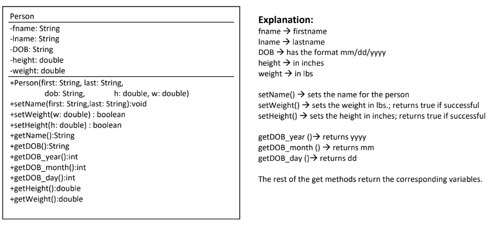
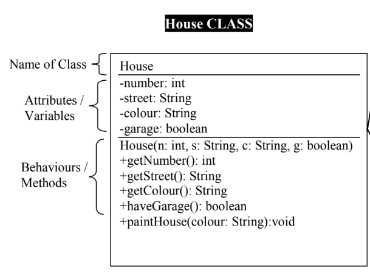

Assignment Intro
In the first OOP (Object Oriented Programming) unit, we discovered how to create, read and understand a UML (Unified Modeling Language) diagram. The "Object Oriented Learning Excercises Set 1" was primarily about understanding UML diagrams that were given (as seen in the photo) and being able to write code based off of it.

Code Snippet
public class Person {
private String fname;
private String lname;
private String date;
private double height;
private double weight;
public Person(String first, String last, String dob, double h, double w) {
fname = first;
lname = last;
date = dob;
height = h;
weight = w;
}
public void setName(String first, String last) {
fname = first;
lname = last;
}
public boolean setWeight(double w) {
if (w > 0) {
weight = w;
return true;
}
return false;
}
public boolean setHeight(double h) {
if (h > 0) {
height = h;
return true;
}
return false;
}
public String getName() {
return fname + " " + lname;
}
public String getDOB() {
return date;
}
public int getDOB_year() {
return Integer.parseInt(date.substring(6));
}
public int getDOB_month() {
return Integer.parseInt(date.substring(0, 2));
}
public int getDOB_day() {
return Integer.parseInt(date.substring(3, 5));
}
public double getHeight() {
return height;
}
public double getWeight() {
return weight;
}
}Programming Concept
While it may look intimidating, understanding UML is not as hard as it looks. The top portion has the name of the class followed by attributes which in this case are number, colour etc. Along with the attributes, after a semicolon is the variable type (int, String, boolean). Succeeding this, we have the constructor class followed by both return and void methods.

Challenges
While understanding the overall concept of UML diagrams was relatively simple, this assignment was VERY tedious and required a significant amount of time to complete it to perfection. Apart from that it was a pretty straightforward assignment that did not require too much brain power.
Solutions
As my challenges for this concept were strictly because of my own time sense and time management, the only solution I would say that I reached was completing this assignment with eye breaks in between to make sure I wasn't over-stressing myself and spreading the work across multiple days.
Reflection
As I missed the day where it was first introduced, it looked scary at first, but eventually I realize how straightforward it was and was able to manipulate, create and read my own UML diagrams with relative ease. Overall, it was one of the easier concepts we learned.